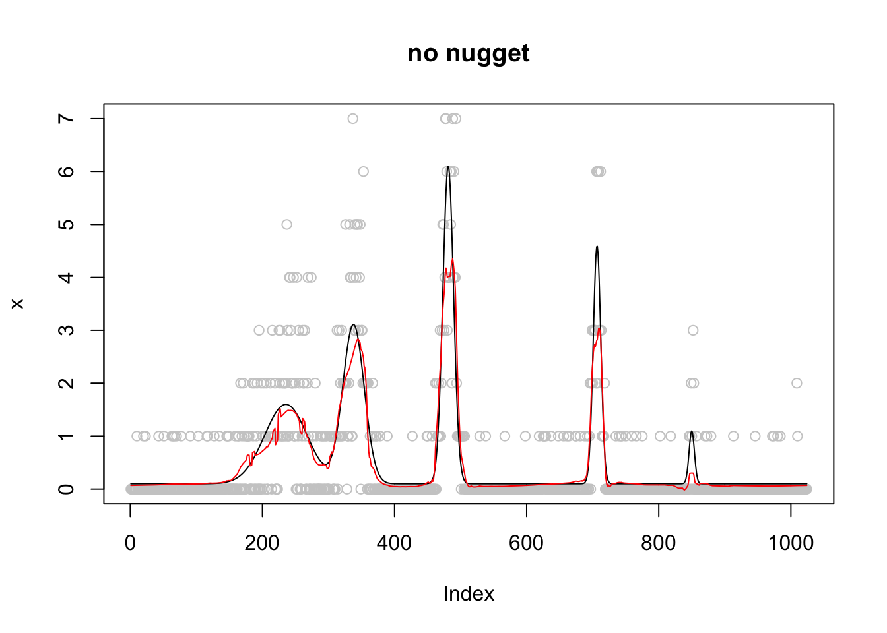
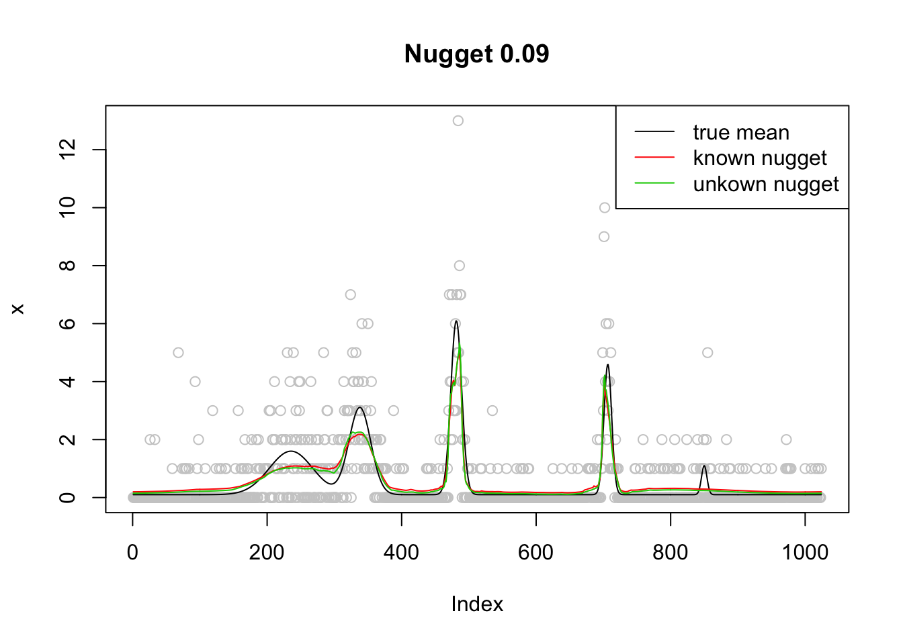

Anscombe transformation for dealing with nugget effect
Dongyue Xie
2018-10-14
Last updated: 2018-10-22
workflowr checks: (Click a bullet for more information)-
✔ R Markdown file: up-to-date
Great! Since the R Markdown file has been committed to the Git repository, you know the exact version of the code that produced these results.
-
✔ Environment: empty
Great job! The global environment was empty. Objects defined in the global environment can affect the analysis in your R Markdown file in unknown ways. For reproduciblity it’s best to always run the code in an empty environment.
-
✔ Seed:
set.seed(20180501)The command
set.seed(20180501)was run prior to running the code in the R Markdown file. Setting a seed ensures that any results that rely on randomness, e.g. subsampling or permutations, are reproducible. -
✔ Session information: recorded
Great job! Recording the operating system, R version, and package versions is critical for reproducibility.
-
Great! You are using Git for version control. Tracking code development and connecting the code version to the results is critical for reproducibility. The version displayed above was the version of the Git repository at the time these results were generated.✔ Repository version: afdbad2
Note that you need to be careful to ensure that all relevant files for the analysis have been committed to Git prior to generating the results (you can usewflow_publishorwflow_git_commit). workflowr only checks the R Markdown file, but you know if there are other scripts or data files that it depends on. Below is the status of the Git repository when the results were generated:
Note that any generated files, e.g. HTML, png, CSS, etc., are not included in this status report because it is ok for generated content to have uncommitted changes.Ignored files: Ignored: .DS_Store Ignored: .Rhistory Ignored: .Rproj.user/ Ignored: data/.DS_Store Untracked files: Untracked: analysis/chipexoeg.Rmd Untracked: analysis/talk1011.Rmd Untracked: data/chipexo_examples/ Untracked: data/chipseq_examples/ Untracked: talk.Rmd Untracked: talk.pdf Unstaged changes: Modified: analysis/literature.Rmd Modified: analysis/sigma.Rmd
Expand here to see past versions:
Introduction
Data generation
Assume \(m\) has smooth structure, \(\mu_t=(m_t+\epsilon)^2\) where \(\epsilon\sim N(0,\sigma^2)\), and \(X_t\sim Pois(\mu_t)\). Then \(Y_t=\sqrt{X_t}\approx \sqrt{\mu_t}+N(0,1/4)=m+\epsilon+N(0,1/4)\) and \(\hat\mu_t=\hat m_t^2\).
Recover smooth structure
If we do square-root type variance stablizing transformation of poisson \(X\sim Poi(\mu)\), then \(Y=\sqrt{X}\) and \(E(Y)\approx \sqrt{\mu}\) and \(Var(Y)\approx 1/4\). Assume \(\mu=(m+\epsilon)^2\), then \(E(Y)=m+\epsilon\). So we can have a version of vst to deal with nugget effect. For example, if we observe \(X_t\sim Pois(\mu)\) then form \(y_t=\sqrt{x_t}\). Apply any smoothing method with variance \((\sigma^2+1/4)\) to \(y=(y_1,...,y_t)\) to get \(\hat{m}\) then \(\hat\mu_{smooth}=\hat{m}^2\).
Advancetage: no need to worry about 0; homoscedastic variance which is easier to estimate.
When the nugget effect is unknown, three neighboring points(Gasser et al, 1986) were used to estimate the variance ,\(\sigma^2+1/4\). The formula is \[\frac{2}{3(n-2)}\Sigma_{i=1}^{n-2} (\frac{1}{2}y_i-y_{i+1}+\frac{1}{2}y_{i+2})^2,\] where \(y=\sqrt{x}\). If the estimated variance is smaller than \(1/4\), I make it to be \(1/4\). Or, we can simply treat var as unkown and use smash.gaus(y)
Experiments
library(smashrgen)
vst_gen=function(x,sigma=NULL,c=3/8,nug_est=T){
n=length(x)
y=sqrt(x+c)
x.var=rep(1/4,n)
x.var[x==0]=0
if(is.null(sigma)){
if(nug_est){
sigma=sqrt(homo_var(sqrt(x),1/4)-1/4)
m=smashr::smash.gaus(y,sqrt(x.var+sigma^2))
}else{
m=smashr::smash.gaus(y)
}
}else{
m=smashr::smash.gaus(y,sqrt(x.var+sigma^2))
}
return(m^2-c)
}
homo_var=function(x,minv=0){
#second order method
n=length(x)
ssq=0
for (i in 1:(n-2)) {
ssq=ssq+(0.5*x[i]-x[i+1]+0.5*x[i+2])^2
}
var.hat=ssq*2/(3*(n-2))
return(ifelse(var.hat>=minv,var.hat,minv))
}spike.f = function(x) (0.75 * exp(-500 * (x - 0.23)^2) + 1.5 * exp(-2000 * (x - 0.33)^2) + 3 * exp(-8000 * (x - 0.47)^2) + 2.25 * exp(-16000 *
(x - 0.69)^2) + 0.5 * exp(-32000 * (x - 0.83)^2))
n = 512
t = 1:n/n
m = spike.f(t)
m=m*2+0.1
set.seed(12345)
sigma=0
mm=(sqrt(m)+rnorm(n,0,sigma))^2
x=rpois(n,mm)
mu=vst_gen(x,sigma)
plot(x,col='grey80',main='no nugget')
lines(m)
lines(mu,col=2)
Expand here to see past versions of unnamed-chunk-2-1.png:
| Version | Author | Date |
|---|---|---|
| a31c75e | Dongyue Xie | 2018-10-18 |
set.seed(12345)
sigma=0.3
mm=(sqrt(m)+rnorm(n,0,sigma))^2
x=rpois(n,mm)
mu=vst_gen(x,sigma)
mu.s=vst_gen(x,NULL)
mu.su=vst_gen(x,NULL,nug_est = F)
plot(x,col='grey80',main='with nugget 0.3')
lines(m)
lines(mu,col=2)
lines(mu.s,col=3)
lines(mu.su,col=4)
legend('topright',c('smooth mean','known var','unkown var-est nugget','unkown var'),lty=c(1,1,1,1),col=c(1,2,3,4))
Expand here to see past versions of unnamed-chunk-2-2.png:
| Version | Author | Date |
|---|---|---|
| a31c75e | Dongyue Xie | 2018-10-18 |
m=m*5+20
set.seed(12345)
sigma=0.3
x=rpois(n,(sqrt(m)+rnorm(n,0,sigma))^2)
mu=vst_gen(x,sigma)
mu.s=vst_gen(x,NULL)
mu.su=vst_gen(x,NULL,nug_est = F)
plot(x,col='grey80',main='with nugget 0.3')
lines(m)
lines(mu,col=2)
lines(mu.s,col=3)
lines(mu.su,col=4)
legend('topright',c('smooth mean','known var','unkown var-est nugget','unkown var'),lty=c(1,1,1,1),col=c(1,2,3,4))
Expand here to see past versions of unnamed-chunk-2-3.png:
| Version | Author | Date |
|---|---|---|
| a31c75e | Dongyue Xie | 2018-10-18 |
sigma=0.5
x=rpois(n,(sqrt(m)+rnorm(n,0,sigma))^2)
mu=vst_gen(x,sigma)
mu.s=vst_gen(x,NULL)
mu.su=vst_gen(x,NULL,nug_est = F)
plot(x,col='grey80',main='with nugget 0.5')
lines(m)
lines(mu,col=2)
lines(mu.s,col=3)
lines(mu.su,col=4)
legend('topright',c('smooth mean','known var','unkown var-est nugget','unkown var'),lty=c(1,1,1,1),col=c(1,2,3,4))
Real data comparison
extract_counts_CTCF <- function(filename){
bed_counts <- read.table(filename, header = F, stringsAsFactors = F)
colnames(bed_counts) <- c("chr", "start", "end", "name", "width", "counts")
counts <- strsplit(bed_counts$counts, split = ",")[[1]]
counts[counts == "NA"] <- 0
counts <- as.numeric(counts)
return(counts.l = list(chr = bed_counts$chr, start = bed_counts$start, end = bed_counts$end, counts = counts))
}
chipexo1 <- extract_counts_CTCF("/Users/dongyue/Documents/smash-gen/data/chipexo_examples/example_CTCF_MACE_wgEncodeOpenChromChipHelas3CtcfAlnRep1_forward_counts.txt")
smash.out=smash.poiss(chipexo1$counts)
y=reflect(chipexo1$counts,'both',c(300,299))
smashgen.out=smash_gen_lite(y)
vst.out=vst_gen(y,NULL,nug_est = F)
plot(chipexo1$counts, col = "gray80", ylab = "rep1 forward", xlab = "", main = "EncodeOpenChromChipHelas - Rep 1")
lines(smash.out, col = 2)
lines(smashgen.out[301:725],col=4)
lines(vst.out[301:725],col=3)
legend("topright", # places a legend at the appropriate place
c("truth","smash-poiss",'smashgen','vst-gen'), # puts text in the legend
lty=c(0,1,1,1), # gives the legend appropriate symbols (lines)
pch=c(1,NA,NA,NA),
lwd=c(1,1,1,1),
cex = 0.5,
col=c("gray80","red", "blue",3))
Expand here to see past versions of unnamed-chunk-3-1.png:
| Version | Author | Date |
|---|---|---|
| a31c75e | Dongyue Xie | 2018-10-18 |
################
chipexo1 <- extract_counts_CTCF("/Users/dongyue/Documents/smash-gen/data/chipexo_examples/example_CTCF_MACE_wgEncodeBroadHistoneHelas3CtcfStdAlnRep1_forward_counts.txt")
smash.out=smash.poiss(chipexo1$counts)
y=reflect(chipexo1$counts,'both',c(300,299))
smashgen.out=smash_gen_lite(y)
vst.out=vst_gen(y,NULL,nug_est = F)
plot(chipexo1$counts, col = "gray80", ylab = "rep1 forward", xlab = "", main = "EncodeBroadHistoneHelas - Rep 1")
lines(smash.out, col = 2)
lines(smashgen.out[301:725],col=4)
lines(vst.out[301:725],col=3)
legend("topright", # places a legend at the appropriate place
c("truth","smash-poiss",'smashgen','vst-gen'), # puts text in the legend
lty=c(0,1,1,1), # gives the legend appropriate symbols (lines)
pch=c(1,NA,NA,NA),
lwd=c(1,1,1,1),
cex = 0.5,
col=c("gray80","red", "blue",3))
########
chipexo1 <- extract_counts_CTCF("/Users/dongyue/Documents/smash-gen/data/chipexo_examples/example_CTCF_MACE_wgEncodeOpenChromChipHelas3CtcfAlnRep1_forward_counts.txt")
smash.out=smash.poiss(chipexo1$counts)
y=reflect(chipexo1$counts,'both',c(300,299))
smashgen.out=smash_gen_lite(y)
vst.out=vst_gen(y,NULL,nug_est = F)
plot(chipexo1$counts, col = "gray80", ylab = "rep1 forward", xlab = "", main = "EncodeOpenChromChipHelas - Rep 1")
lines(smash.out, col = 2)
lines(smashgen.out[301:725],col=4)
lines(vst.out[301:725],col=3)
legend("topright", # places a legend at the appropriate place
c("truth","smash-poiss",'smashgen','vst-gen'), # puts text in the legend
lty=c(0,1,1,1), # gives the legend appropriate symbols (lines)
pch=c(1,NA,NA,NA),
lwd=c(1,1,1,1),
cex = 0.5,
col=c("gray80","red", "blue",3))
#########
chipexo1 <- extract_counts_CTCF("/Users/dongyue/Documents/smash-gen/data/chipexo_examples/example_CTCF_MACE_wgEncodeOpenChromChipHelas3CtcfAlnRep2_forward_counts.txt")
smash.out=smash.poiss(chipexo1$counts)
y=reflect(chipexo1$counts,'both',c(300,299))
smashgen.out=smash_gen_lite(y)
vst.out=vst_gen(y,NULL,nug_est = F)
plot(chipexo1$counts, col = "gray80", ylab = "rep2 forward", xlab = "", main = "EncodeOpenChromChipHelas - Rep 2
")
lines(smash.out, col = 2)
lines(smashgen.out[301:725],col=4)
lines(vst.out[301:725],col=3)
legend("topright", # places a legend at the appropriate place
c("truth","smash-poiss",'smashgen','vst-gen'), # puts text in the legend
lty=c(0,1,1,1), # gives the legend appropriate symbols (lines)
pch=c(1,NA,NA,NA),
lwd=c(1,1,1,1),
cex = 0.5,
col=c("gray80","red", "blue",3))
Reference
Gasser, T., Sroka, L. and Jennen-Steinmetz, C. (1986). Residual variance and residual pattern in nonlinear regression. Biometrika 73 625–633.
Session information
sessionInfo()R version 3.5.1 (2018-07-02)
Platform: x86_64-apple-darwin15.6.0 (64-bit)
Running under: macOS High Sierra 10.13.6
Matrix products: default
BLAS: /Library/Frameworks/R.framework/Versions/3.5/Resources/lib/libRblas.0.dylib
LAPACK: /Library/Frameworks/R.framework/Versions/3.5/Resources/lib/libRlapack.dylib
locale:
[1] en_US.UTF-8/en_US.UTF-8/en_US.UTF-8/C/en_US.UTF-8/en_US.UTF-8
attached base packages:
[1] stats graphics grDevices utils datasets methods base
other attached packages:
[1] smashrgen_0.1.0 wavethresh_4.6.8 MASS_7.3-50 caTools_1.17.1.1
[5] ashr_2.2-7 smashr_1.2-0
loaded via a namespace (and not attached):
[1] Rcpp_0.12.18 compiler_3.5.1 git2r_0.23.0
[4] workflowr_1.1.1 R.methodsS3_1.7.1 R.utils_2.7.0
[7] bitops_1.0-6 iterators_1.0.10 tools_3.5.1
[10] digest_0.6.17 evaluate_0.11 lattice_0.20-35
[13] Matrix_1.2-14 foreach_1.4.4 yaml_2.2.0
[16] parallel_3.5.1 stringr_1.3.1 knitr_1.20
[19] REBayes_1.3 rprojroot_1.3-2 grid_3.5.1
[22] data.table_1.11.6 rmarkdown_1.10 magrittr_1.5
[25] whisker_0.3-2 backports_1.1.2 codetools_0.2-15
[28] htmltools_0.3.6 assertthat_0.2.0 stringi_1.2.4
[31] Rmosek_8.0.69 doParallel_1.0.14 pscl_1.5.2
[34] truncnorm_1.0-8 SQUAREM_2017.10-1 R.oo_1.22.0 This reproducible R Markdown analysis was created with workflowr 1.1.1